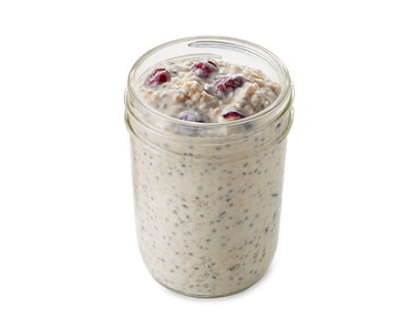
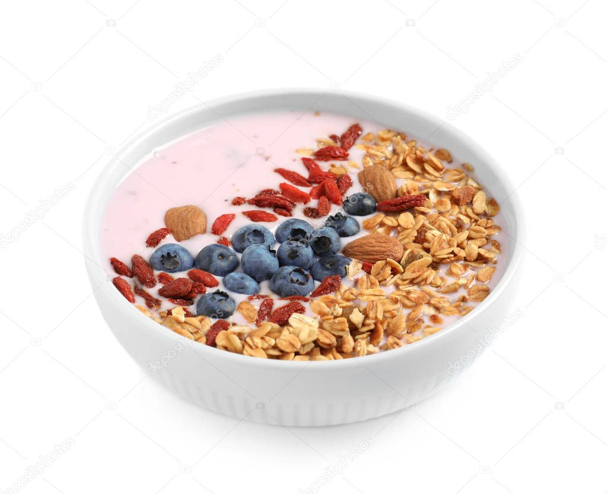
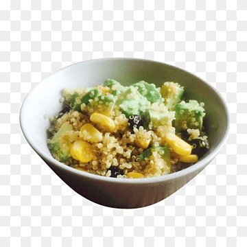
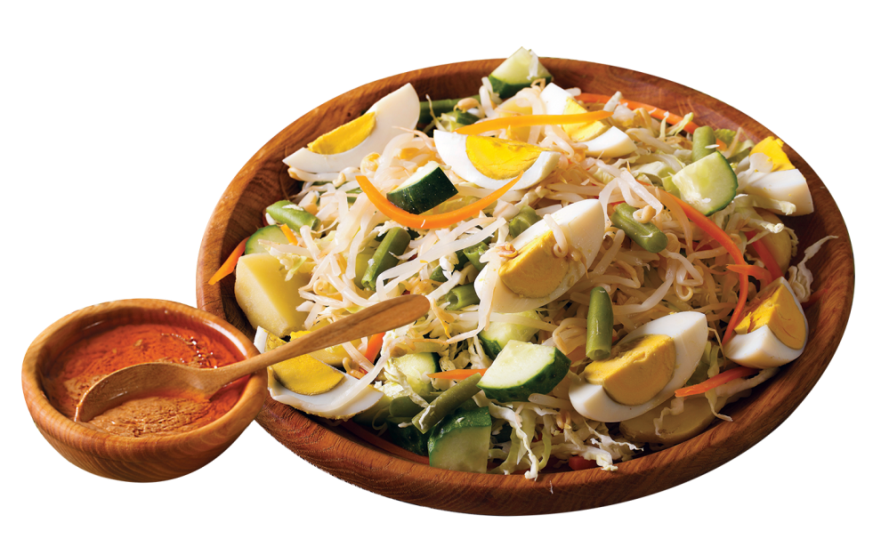
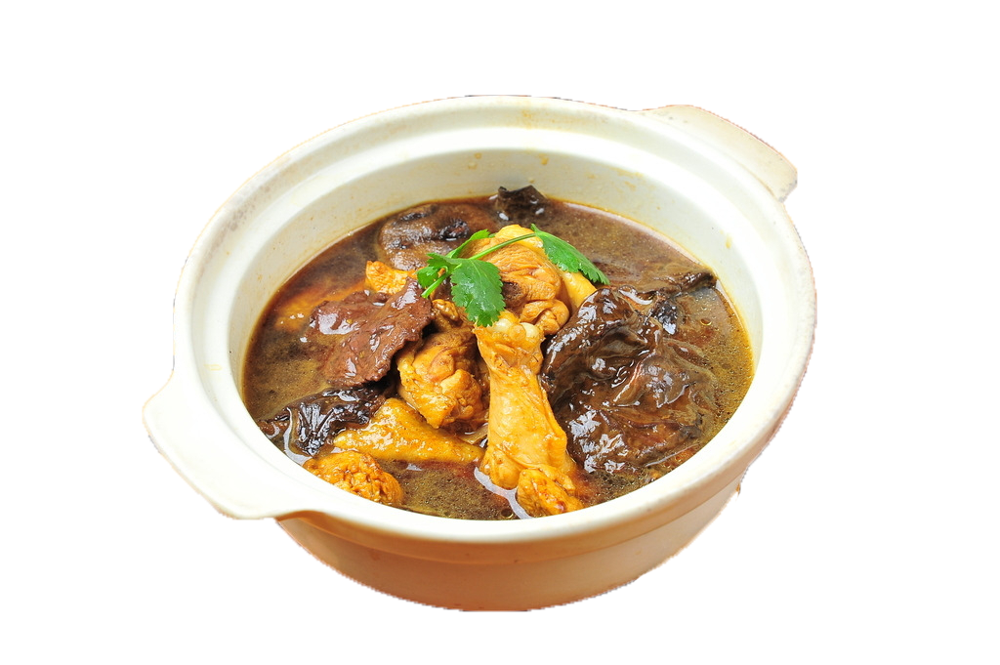
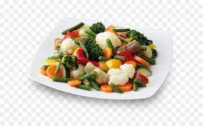
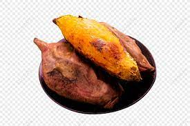
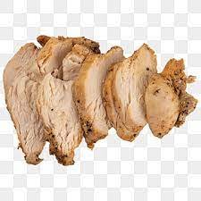
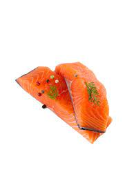

Loading...
Food Menu
Most Popular Items

NASI UDUK IDR 35K
Nasi uduk yang dimasak dengan santan dan rempah-rempah dapat dijadikan sarapan sehat jika disajikan dengan lauk yang dimasak tanpa minyak dan sayuran seperti tomat, mentimun, atau sayuran hijau lainnya.
BUBUR AYAM IDR 30K
Bubur ayam yang dimasak dengan kaldu ayam dan diisi dengan potongan dada ayam yang direbus serta sayuran seperti daun bawang dan seledri merupakan pilihan sarapan yang rendah lemak dan kaya protein.
BUBUR KACANG HIJAU IDR 25K
Bubur kacang hijau yang dimasak dengan sedikit gula dan santan bisa dijadikan sarapan sehat yang tinggi serat dan rendah kalori.
SOTO AYAM IDR 40K
Soto ayam yang dimasak dengan kaldu ayam dan diisi dengan potongan dada ayam yang direbus serta sayuran seperti tomat, daun bawang, dan seledri merupakan pilihan sarapan yang rendah lemak dan kaya protein.

OVERNIGHT OATS IDR 35K
Oatmeal yang direndam semalaman dalam susu almond atau yogurt rendah lemak, ditambahkan potongan buah-buahan segar dan topping seperti kacang-kacangan atau biji-bijian.

SMOOTHIE BOWL IDR 40K
Smoothie yang dibuat dengan campuran buah-buahan segar dan sayuran, ditambahkan topping seperti biji-bijian, potongan buah-buahan, dan kacang-kacangan.
ROTI GANDUM IDR 35K
Roti gandum yang tinggi serat dan rendah gula disajikan dengan selai yang bisa dipilih oleh customer.

QUINOA BOWL IDR 40K
Quinoa yang kaya protein dan serat dicampur dengan sayuran seperti bayam, brokoli, dan wortel serta ditambahkan saus rendah gula seperti saus tomat atau saus salsa.

GADO-GADO IDR 40K
Gado-gado terdiri dari sayuran yang direbus seperti kacang panjang, taoge, kol, dan mentimun yang disajikan dengan saus kacang yang rendah gula dan rendah lemak. Tambahkan potongan tahu dan tempe untuk protein.
NASI TIMBEL IDR 50K
Nasi timbel yang dibungkus daun pisang dan disajikan dengan lauk pauk yang rendah lemak seperti ayam atau ikan panggang serta sayuran seperti kangkung atau tomat.
SOTO BETAWI IDR 45K
Soto betawi terdiri dari kaldu sapi yang dimasak dengan santan dan rempah-rempah serta diisi dengan potongan daging sapi, kentang, dan tomat. Tambahkan potongan daun bawang dan seledri untuk rasa dan vitamin.

RAWON IDR 45K
Rawon terbuat dari daging sapi yang dimasak dengan rempah-rempah seperti kluwak dan disajikan dengan nasi merah serta sayuran hijau seperti kangkung atau bayam.
SATE AYAM IDR 50K
Sate ayam terbuat dari potongan ayam yang dipanggang dan disajikan dengan saus kacang yang rendah gula dan rendah lemak. Tambahkan potongan tomat atau mentimun untuk rasa dan serat.
SALAD IDR 35K
Campurkan daun selada, bayam, atau kangkung dengan potongan tomat, timun, atau paprika. Tambahkan protein seperti potongan ayam panggang, tahu atau telur rebus. Siram dengan saus salad yang rendah kalori.
SANDWICH IDR 35K
Isi roti gandum dengan potongan sayuran seperti tomat, mentimun, dan selada. Tambahkan potongan keju rendah lemak dan potongan daging ayam panggang untuk protein.
STIR-FRY IDR 45K
Tumis sayuran seperti paprika, bawang putih, dan bayam bersama dengan potongan daging ayam atau udang. Sajikan dengan nasi merah atau mi soba.
IKAN BAKAR IDR 65K
Panggang ikan seperti ikan kakap atau ikan tenggiri dan sajikan dengan sayuran hijau seperti brokoli atau kangkung dan nasi merah atau jagung.
OPOR AYAM IDR 50K
Opor ayam terbuat dari ayam yang dimasak dengan santan rendah lemak dan rempah-rempah seperti kunyit dan serai. Tambahkan potongan wortel dan kentang untuk vitamin.
GULE KAMBING IDR 65K
Gule kambing terbuat dari daging kambing yang dimasak dalam kuah santan rendah lemak bersama dengan rempah-rempah seperti kayu manis dan cengkeh. Tambahkan potongan kentang dan wortel untuk rasa dan serat.
SUP JAGUNG IDR 40K
Sup jagung terdiri dari jagung yang dimasak dalam kaldu sayuran rendah lemak bersama dengan potongan ayam atau tahu. Tambahkan potongan daun bawang dan seledri untuk rasa dan vitamin.

CAPCAY IDR 35K
Capcay terdiri dari sayuran seperti kol, kacang panjang, dan wortel yang dimasak dalam kuah kaldu rendah lemak. Tambahkan potongan tahu dan tempe untuk protein.

BAKEN SWEET POTATO IDR 30K
Panggang ubi jalar dalam oven dan sajikan dengan topping rendah kalori seperti yoghurt Yunani, potongan alpukat, dan potongan ayam panggang.

CHICHKEN BREAST IDR 50K
anggang atau tumis dada ayam tanpa kulit dan sajikan dengan sayuran seperti brokoli, kacang panjang, atau paprika. Tambahkan sedikit bawang putih atau saus rendah kalori untuk rasa.
